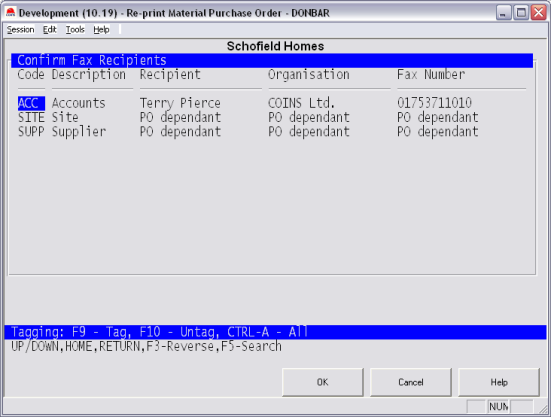
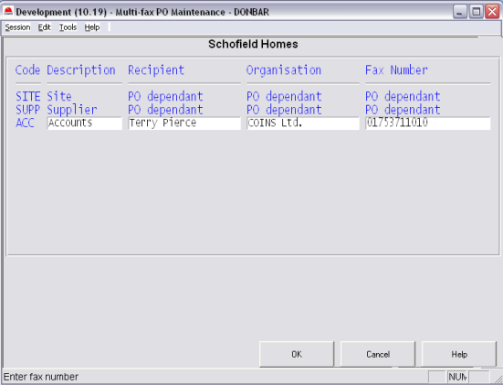

You can fax a PO to multiple fax numbers. For example, you can fax a copy to the accounts office as well as the
If multi-faxing has been enabled,

A T at the end of the row shows that you have selected that recipient.
For each recipient in turn,
Use Multi-fax PO Maintenance to set up fax details for each recipient (for example, accounts dept.). These are the fax details that are used when multi-faxing orders.

The Code field contains the codes that should be put in DEFFAX/DEFEFAX.
Two of these codes are always present: SITE, and SUPP. The fax details for these cannot be maintained in Multi-fax PO Maintenance as they come from the details on the PO being faxed.
SITE details are as follows:
Fax Number: pi_project.pij_fax (site fax number)
Organ
Contact: pi_project.pij_siteqs (site quantity surveyor)
Fax number and contact can be maintained in the Project Workbench (Further details > Site details).
SUPP details are:
Fax Number: ci_office.cio_fax (or failing that ap_vendor.avm_fax)
Organ
Contact: po_hdr.poh_attention
The values for these are entered when the order is raised.